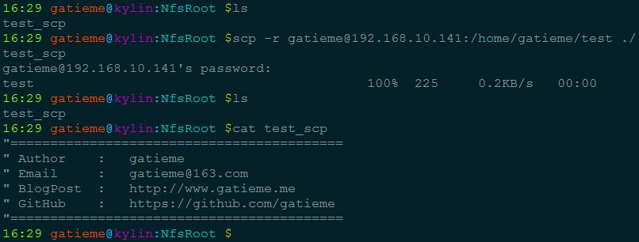

scp传输
当两台LINUX主机之间要互传文件时可使用SCP命令来实现
scp传输速度较慢,但使用ssh通道保证了传输的安全性
复制文件
- 将本地文件拷贝到远程
scp 文件名 –用户名@计算机IP或者计算机名称:远程路径
- 从远程将文件拷回本地
scp –用户名@计算机IP或者计算机名称:文件名 本地路径
命令格式
1 | scp local_file remote_username@remote_ip:remote_folder |
第1,2个指定了用户名，命令执行后需要再输入密码，第1个仅指定了远程的目录，文件名字不变，第2个指定了文件名；
第3,4个没有指定用户名，命令执行后需要输入用户名和密码，第3个仅指定了远程的目录，文件名字不变，第4个指定了文件名；
复制目录
- 将本地目录拷贝到远程
scp -r 目录名 用户名@计算机IP或者计算机名称:远程路径
- 从远程将目录拷回本地
scp -r 用户名@计算机IP或者计算机名称:目录名 本地路径
命令格式
1 | scp -r local_folder remote_username@remote_ip:remote_folder |
第1个指定了用户名，命令执行后需要再输入密码；
第2个没有指定用户名，命令执行后需要输入用户名和密码；
例子
1 | scp -r /home/space/music/ root@www.cumt.edu.cn:/home/root/others/ |
参数详解
| 参数 | 描述 |
|---|---|
| -a | 尽可能将档案状态、权限等资料都照原状予以复制 |
| -r | 若 source 中含有目录名，则将目录下之档案亦皆依序拷贝至目的地 |
| -f | 若目的地已经有相同档名的档案存在，则在复制前先予以删除再行复制 |
| -v | 和大多数 linux 命令中的 -v 意思一样 , 用来显示进度 . 可以用来查看连接 , 认证 , 或是配置错误 |
| -C | 使能压缩选项 |
| -P | 选择端口 . 注意 -p 已经被 rcp 使用 |
| -4 | 强行使用 IPV4 地址 |
| -6 | 强行使用 IPV6 地址 |
举例说明
- 把计算机名为“v111.nn”下所有的东西都拷贝到本机/home/admin/目录下
1 | scp -r * v111.nn:/home/admin/ 1 |
- 以admin的身份把IP地址为“192.168.219.125”，/home/admin/test目录下所有的东西都拷贝到本机/home/admin/目录下
1 | scp -r admin@192.168.88.88:/home/admin/test /home/admin/1 |

参考
[CentOS 不能使用scp命令 解决方法](http://www.linuxidc.com/Linux/2014-09/106569.htm_
rsync差异化传输(支持断点续传,数据同步)
1 | rsync -av /backup/ -e ssh root@192.168.1.110:/bak1 |
-a: archive归档模式，表示以递归方式传输文件，并保持所有文件属性，链接等,等于-rlptgoDrsync——remote sync。
rsync是Linux系统下的文件同步和数据传输工具，它采用“rsync”算法，可以将一个客户机和远程文件服务器之间的文件同步，也可以在本地系统中将数据从一个分区备份到另一个分区上。
如果rsync在备份过程中出现了数据传输中断，恢复后可以继续传输不一致的部分。rsync可以执行完整备份或增量备份。
它的主要特点有：
- 可以镜像保存整个目录树和文件系统；
- 可以很容易做到保持原来文件的权限、时间、软硬链接；无须特殊权限即可安装；
- 可以增量同步数据，文件传输效率高，因而同步时间短；
- 可以使用rcp、ssh等方式来传输文件，当然也可以通过直接的socket连接；
- 支持匿名传输，以方便进行网站镜象等；
- 加密传输数据，保证了数据的安全性；
管道传输(降低IO开销)
1 | gzip -c sda.img | ssh root@192.168.1.110 "gunzip -c - > /image/sda.img"1 |
对sda.img使用gzip压缩,-c参数表示输出到stdout,即通过管道传送
gunzip -c - 中的”-“表示接收从管道传进的sdtin
nc传输(一种网络的数据流重定向)
nc所做的就是在两台电脑之间建立tcp或udp链接,并在两个端口之间传输数据流,是一种网络的数据流重定向
使用dd结合nc命令网络克隆磁盘分区
主机:
1 | dd if=/dev/vda | gzip -c | nc -l 505221 |
待恢复机:
1 | nc 192.168.215.63 50522 | gzip -dc | dd of=/dev/sda1 |
dd命令克隆/dev/vda磁盘,并使用gzip压缩,把数据流重定向到本机50522端口,待恢复机上使用nc连接主机50522端口,就能接收主机50522端口的比特数据流,然后使用gzip解压缩,并恢复到/dev/sda磁盘
dd命令读取的是磁盘扇区,所以不论磁盘文件系统,或者分区表,磁盘MBR信息,dd都能够复制,可以使用bs,count参数控制要克隆的大小
例如dd bs=512 count=1 if=/dev/vda of=mbr.img 只复制磁盘vda的第一个扇区512K字节数据(引导程序和分区表)
通常，可以用scp完成两台主机间的文件传输任务，但在主机间未建立信任关系的情况下，scp每次都需要输入密码，用起来感觉不是很方便，之前这篇笔记介绍过不用输入密码执行脚本或传输文件的方法，但对于一些临时性的任务，准备工作还是比较麻烦。
what is nc ?
nc是netcat的简写，关于nc是什么，man如是说：arbitrary TCP and UDP connections and listens
nc可以方便地实现任意TCP/UDP端口的侦听，连接的建立，端口的扫描，等等。也即，nc既可以作为server以TCP或UDP方式侦听指定端口，也可以作为client发起TCP连接或方式UDP包。下面要介绍的技巧就是借助其TCP连接来实现主机间文件传输的。
nc的控制参数不少，常用的几个参数如下所列：
备注：nc要连接的目的端口可以是具体的整数，也可以直接通过服务名指定，这种情况下，nc会负责将name映射至某个well-known port（可用cat /etc/services查看这些端口跟服务名的映射关系）
| 参数 | 描述 |
|---|---|
| -l | 用于指定nc将处于侦听模式。指定该参数，则意味着nc被当作server，侦听并接受连接，而非向其它地址发起连接 |
| -p port | 指定nc要使用的端口。若之前已指定-l，则这里的-p指定具体的侦听端口；若未指定-l，则表示向这个端口发起连接 |
| -s hostname/ip-address | 指定发送数据的源IP地址，适用于多网卡机器 |
| -u | 指定nc使用UDP协议，默认为TCP |
| -v | 输出交互或出错信息，新手调试时尤为有用 |
use nc to transmit data between hosts
经过上面对nc的简介，估计不少同学已经知道怎么用nc来实现两台机器间的文件传输了。这里对实现流程做简单说明。
在数据接收方的机器上侦听指定端口
1 | nc -l -p 8210 > demo.txt # 在本机8210端口侦听TCP连接，将收到的数据写入文本文件 |
在数据发送方机器上向指定地址(ip+port)以TCP方式发送数据
1 | nc dest_ip 8210 < demo.txt # 向ip为dest_ip的机器的8210端口发送demo.txt文件 |
-v打印出错信息
1 | 接收方：nc -v -l -p 8210 |
注意：使用nc传文件时，需注意操作次序，receiver先侦听端口，sender向receiver所在机器的该端口发送数据。否则发送失败。
建立文件服务器
除了上面集中传输文件的方式之外,还可以通过简历文件服务器,然后通过网络挂载的方式传输,这种适用于经常性的拷贝,下面是一个挂载ftp服务器的例子
挂载ftp服务器
1 | yum install curlftpfs |

...
...
Copyright 2021 sunfy.top ALL Rights Reserved